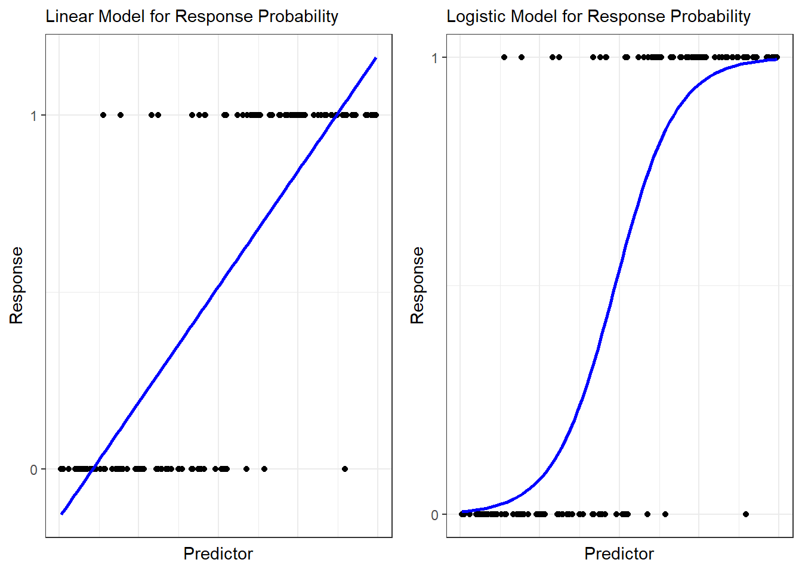

28 Regression Models for Categorical Responses
On the one hand, modeling a categorical response (where the response follows a discrete distribution) is no different than modeling a quantitative response (where the response follows a continuous distribution). In both cases, we specify a distribution, and we allow one or more parameters to vary across individuals based on their predictors through some pre-specified function. On the other hand, the modeling is quite different as there are often more pitfalls to be aware of. In particular, we are no longer in a position to think of the model as
\[(\text{Response})_i = (\text{Signal})_i + (\text{Noise})_i.\]
As an example, if the response is binary, what type of noise could be added to “jitter” the response? A binary response must always take the value 0 or 1, which implies that thinking of the response as a “jittered” signal seems somehow inauthentic. The key to extending the regression model to categorical response variables is to view regression as an extension as a more complex specification of the conditional response.
28.1 Considerations for a Binary Response
Suppose our response is binary, taking the value 1 when an event of interest occurs (a “success”) and taking the value 0 when the event does not occur (a “failure”). A starting point for this model is
\[(\text{Response})_i \stackrel{\text{Ind}}{\sim}Ber\left(\theta_i\right),\]
where we are allowing the probability of success \(\theta_i\) to potentially vary from one observation to the next. This model continues to assume the response from one individual is independent of the response from any other individual. Our initial attempt at generalizing to a regression setting may be to borrow the linear model structure of the previous chapters and consider
\[\theta_i = \beta_0 + \sum_{j=1}^{p} \beta_j (\text{Predictor } j)_i.\]
Unfortunately, this can be a poor strategy. Notice that there is nothing ensuring that this linear function produces values of \(\theta_i\) which are consistent with its support (this is the same problem we encountered in Example 23.2). That is, we know that since \(\theta_i\) is a probability, its support is the interval \((0, 1)\). The linear function, however, could quite easily produce values which are negative or exceed 1; instead, we desire a function that is always bounded between 0 and 1, similar to that represented in Figure 28.1.
One of the most common choices for the functional form is the logistic function.
Definition 28.1 (Logistic Regression) Given a binary response; logistic regression assumes that
\[ \begin{aligned} (\text{Response})_i &\mid (\text{Predictors})_i, \boldsymbol{\beta} \stackrel{\text{Ind}}{\sim}Ber\left(\theta_i\right) \\ \theta_i &= \frac{e^{\beta_0 + \sum_{j=1}^{p} \beta_j (\text{Predictor } j)_i}}{1 + e^{\beta_0 + \sum_{j=1}^{p} \beta_j (\text{Predictor } j)_i}}. \end{aligned} \]
This is known as logistic regression because the functional form of the probability matches that of the CDF of the Standard Logistic Distribution:
\[\frac{e^x}{1+e^{x}}.\]
Note
When performing regression with a binary response, any CDF could be used for the functional form relating the predictors to the success probability; however, the Standard Logistic (“logistic regression”) and Standard Normal (“probit regression”) distributions are most common.
Using a CDF for the functional form ensures that for any choice of \(\boldsymbol{\beta}\) and the predictors, the function will always take a value between 0 and 1. Notice that our choice of \(\theta_i\) is nonlinear in the parameters \(\boldsymbol{\beta}\); however, it still has that feel of a linear model because of the linear predictor
\[\beta_0 + \sum_{j=1}^{p} \beta_j (\text{Predictor } j)_i.\]
Nothing prohibits us from considering a nonlinear function instead of the linear predictor; it is just common practice to use the linear predictor, as we have already seen it is flexible enough to accommodate categorical predictors and curvature.
For a logistic regression, the \(j\)-th coefficient \(\beta_j\) is the log odds ratio of the response occurring when the \(j\)-th predictor is increased by one unit compared to its current value, holding all other predictors fixed. For probit regression, the \(j\)-th coefficient \(\beta_j\) has no intuitive interpretation (hence the popularity of logistic regression).
28.2 Considerations for Count Data
As in the binary response setting, we take care to ensure that the functional form relating the predictors to key parameters in the conditional distribution of the response enforces constraints on the support.
Consider a response which counts the number of successes out of a fixed number of trials. We might consider a model of the form
\[ \begin{aligned} (\text{Response})_i &\mid (\text{Predictors})_i, \boldsymbol{\beta} \stackrel{\text{Ind}}{\sim}Bin\left(m_i, \theta_i\right) \\ \log\left(\frac{\theta_i}{1-\theta_i}\right) &= \beta_0 + \sum_{j=1}^{p} \beta_j (\text{Predictor } j)_i. \end{aligned} \]
While we have written this in a slightly different form, we are using the same functional form for linking the response probability to the predictors; here, we have written it in terms of the link function.
Definition 28.2 (Link Function) The functional form “linking” the linear predictor
\[\beta_0 + \sum_{j=1}^{p} \beta_j (\text{Predictor } j)_i\]
to the mean response of the model in a regression model. In particular, it is the function \(g\) such that
\[g\left(\theta_i\right) = \beta_0 + \sum_{j=1}^{p} \beta_j (\text{Predictor } j)_i.\]
Common link functions include:
- Identity link: \(g\left(\theta_i\right) = \theta_i\)
- Logit link: \(g\left(\theta_i\right) = \log\left(\frac{\theta_i}{1 - \theta_i}\right)\)
- Log link: \(g\left(\theta_i\right) = \log\left(\theta_i\right)\)
- Inverse link: \(g\left(\theta_i\right) = \frac{1}{\theta_i}\)
- Negative inverse link: \(g\left(\theta_i\right) = -\frac{1}{\theta_i}\)
- Inverse squared link: \(g\left(\theta_i\right) = \frac{1}{\theta_i^2}\)
The logistic distribution function is chosen since \(\theta_i\) should be constrained to the interval \((0, 1)\). Notice that using the logit link for the success probability in the Binomial distribution on the response does not specify the mean response directly; instead, it is simply used to link the predictors to the mean response such that
\[E\left[(\text{Response}) \mid (\text{Predictors}), \boldsymbol{\beta}\right] = m \frac{e^{\beta_0 + \sum_{j=1}^{p} \beta_j (\text{Predictor } j)}}{1 + e^{\beta_0 + \sum_{j=1}^{p} \beta_j (\text{Predictor } j)}},\]
where \(m\) is the number of trials.
Note
Any distribution for which the mean response is defined through the “success” probability (Bernoulli, Binomial, Geometric) could potentially make use of the logit link.
The Poisson distribution is common for modeling the number of rare events in a large population, or for arbitrary counts that have no upper bound. Extending this into a regression model generally takes the form
\[ \begin{aligned} (\text{Response})_i &\mid (\text{Predictors})_i, \boldsymbol{\beta} \stackrel{\text{Ind}}{\sim}Poisson\left(\lambda_i\right) \\ \log\left(\lambda_i\right) &= \beta_0 + \sum_{j=1}^{p} \beta_j (\text{Predictor } j)_i. \end{aligned} \]
The log link function is chosen to ensure that \(\lambda > 0\) for all possible choices of the parameter vector \(\boldsymbol{\beta}\) and predictors.
In each of the cases considered in this chapter, the model specifies the mean response; however, it also specifies the variability in the response. For example, the mean of a Poisson distribution is \(\lambda_i\), and the variance is also given by \(\lambda_i\). These distributional models are unique in that knowing the mean response uniquely determines the variability in the response. Occasionally, we come across data for which the response behaves nearly like one of these distributions; however, additional variability is present. There are ways of generalizing these models to account for this additional dispersion.